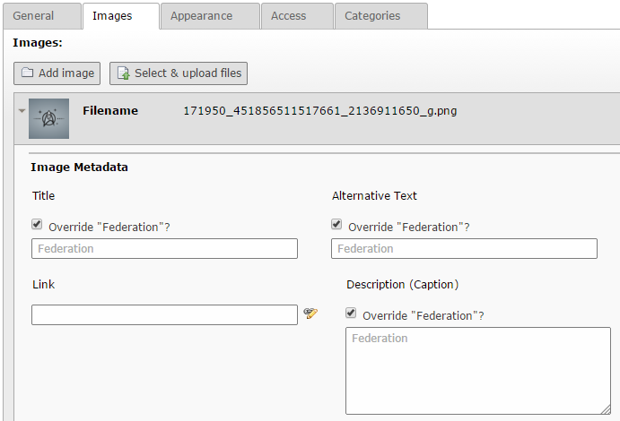

Bug #63991
FAL override checkboxes are always active, when DBAL is installed
| Status: | Resolved | Start date: | 2014-12-19 | |
|---|---|---|---|---|
| Priority: | Should have | Due date: | ||
| Assigned To: | - | % Done: | 100% |
|
| Category: | File Abstraction Layer (FAL) | Spent time: | - | |
| Target version: | - | |||
| TYPO3 Version: | 6.2 | Is Regression: | No | |
| PHP Version: | Sprint Focus: | |||
| Complexity: |
Description
In backend module "Filelist" you are able to set meta informations for any files. When inserting a file to content you are also able to override some meta informations (Title, Alt, Description) for this single use.
When DBAL is active the checkboxes 'Override "Default Value"?' are always active, even if the input below is empty:

This also affects the frontend and API. When you try to output eg. the "title" using the method TYPO3\CMS\Core\Resource\FileReference->getProperty() it is empty, because of set checkbox in backend and empty input field. If you fill in the value, then you will get it. But the default value, filled in Filelist module is not available, at all.
This bug seams to appear when saving the relation. Because when you have DBAL deactivated and add a file to content, and then activate DBAL, this problem does not appear (checkboxes keep as set before). Even when updating the relation after DBAL has been installed again this problem does not appear. It just appears for new relations, apparently.
{kind=link}
Related issues
Associated revisions
[BUGFIX] DBAL: Set allowNull for insert and update queries to TRUE
When DBAL is installed, it was not possible to save NULL values to database, but
TCA fields with mode=useOrOverridePlaceholder fields strongly requires this.
Without the possibility to store NULL to database, "useOrOverridePlaceholder"
would always override the original value.
Resolves: #63991
Releases: master, 6.2
Change-Id: I23cd221431ba9d00e588942bc7c7030e9af805dc
Reviewed-on: http://review.typo3.org/36545
Reviewed-by: Mathias Schreiber <mathias.schreiber@wmdb.de>
Tested-by: Mathias Schreiber <mathias.schreiber@wmdb.de>
Reviewed-by: Jigal van Hemert <jigal.van.hemert@typo3.org>
Tested-by: Jigal van Hemert <jigal.van.hemert@typo3.org>
[BUGFIX] DBAL: Set allowNull for insert and update queries to TRUE
When DBAL is installed, it was not possible to save NULL values to database, but
TCA fields with mode=useOrOverridePlaceholder fields strongly requires this.
Without the possibility to store NULL to database, "useOrOverridePlaceholder"
would always override the original value.
Resolves: #63991
Releases: master, 6.2
Change-Id: I23cd221431ba9d00e588942bc7c7030e9af805dc
Reviewed-on: http://review.typo3.org/37701
Reviewed-by: Jigal van Hemert <jigal.van.hemert@typo3.org>
Tested-by: Jigal van Hemert <jigal.van.hemert@typo3.org>
History
#1 Updated by Marc Bastian Heinrichs 8 months ago
Seems like DBAL doesn't like the NULL value for the fields, which was introduced for this feature.
#2 Updated by Andreas Fernandez 8 months ago
Which DBMS do you use with DBAL?
#3 Updated by Armin Ruediger Vieweg 8 months ago
Andreas Fernandez wrote:
Which DBMS do you use with DBAL?
mysqli. We just use DBAL to define a different database for several tables.
#4 Updated by Armin Ruediger Vieweg 6 months ago
The call of fullQuoteArray($row, $table, $no_quote_fields); looks typically like this in DBAL. The fourth parameter $allowNull will never be set. Its default is FALSE. That is the reason why NULL is always replaced by empty string.
Therefore all fields using mode=useOrOverridePlaceholder will fail, if DBAL is installed.
#5 Updated by Gerrit Code Review 6 months ago
- Status changed from New to Under Review
Patch set 1 for branch master of project Packages/TYPO3.CMS has been pushed to the review server.
It is available at http://review.typo3.org/36545
#6 Updated by Gerrit Code Review 5 months ago
Patch set 1 for branch TYPO3_6-2 of project Packages/TYPO3.CMS has been pushed to the review server.
It is available at http://review.typo3.org/37701
#7 Updated by Armin Ruediger Vieweg 5 months ago
- Status changed from Under Review to Resolved
- % Done changed from 0 to 100
Applied in changeset a1ca5180d383c7daf9f15114742048568ffc913b.